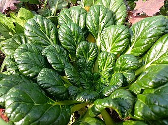

タアサイの生産量 都道府県ランキング
全12県の順位と、とれた量
タアサイが日本でいちばん多くとれるのは茨城県です。162 tで、全国（292 t）の55%を占めます。

| 順位 | 都道府県 | 収穫量 | 全国に占める割合 |
|---|---|---|---|
| 1位 | 茨城県 | 162 t | 55% |
| 2位 | 北海道 | 31 t | 11% |
| 3位 | 千葉県 | 31 t | 11% |
| 4位 | 静岡県 | 17 t | 5.8% |
| 5位 | 兵庫県 | 13 t | 4.5% |
| 6位 | 神奈川県 | 11 t | 3.8% |
| 7位 | 長野県 | 10 t | 3.4% |
| 8位 | 群馬県 | 8 t | 2.7% |
| 9位 | 埼玉県 | 5 t | 1.7% |
| 10位 | 大分県 | 2 t | 0.7% |
| 11位 | 福島県 | 1 t | 0.3% |
| 12位 | 大阪府 | 1 t | 0.3% |
この数字について
- 分類：アブラナ科
- 全国の収穫量：292 t
- この数字が表すもの：収穫量（畑や田でとれた重さ）
- 調査：地域特産野菜生産状況調査 令和6年産
- 12県分を調査（調査していない県は順位に入りません）
タアサイの生産量について、よくある質問
- タアサイの生産量が日本一の都道府県はどこですか？
- 茨城県です。地域特産野菜生産状況調査（令和6年産）で162 tでした。
- タアサイの生産量ランキング2位・3位はどこですか？
- 2位は北海道（31 t）、3位は千葉県（31 t）です。
- タアサイの生産量ランキング4位・5位はどこですか？
- 4位は静岡県（17 t）、5位は兵庫県（13 t）です。タアサイの全12県の順位は上の表のとおりです。
- タアサイの全国の生産量はどれくらいですか？
- 292 t（令和6年産）です。